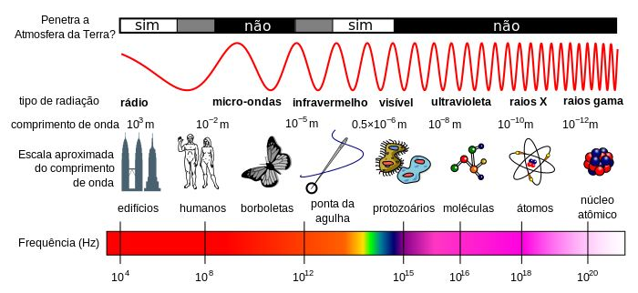

Aula8-64: Velocidade e frequência das ondas eletromagnéticas
Na aula anterior aprendemos que a velocidade de uma onda é igual ao produto entre o seu comprimento de onda e sua frequência. Entretanto, vale ressaltar: não é o comprimento de onda, nem a sua frequência, que determina a velocidade da onda, mas exclusivamente o meio em que ela se propaga. Por exemplo, todas as ondas mecânicas que se propagam no ar terão a mesma velocidade, independentemente de suas frequências. Do mesmo modo, as ondas eletromagnéticas que se propagam no vácuo terão sempre a mesma velocidade, independentemente de suas frequências.
A velocidade de uma onda eletromagnética
A velocidade de uma onda eletromagnética é dada pela seguinte expressão:
, em que
é a permeabilidade magnética do meio e
é a permissividade elétrica do meio
Para o vácuo, a velocidade de uma onda eletromagnética vale:
Obs.:
-
Não há nada no universo mais veloz que essas ondas no vácuo;
-
Ao nos referirmos a essa velocidade, é muito comum usarmos o símbolo c;
-
Comumente usamos a velocidade da onda no vácuo para resolver problemas que envolvem ondas que se propagam na atmosfera terrestre, já que as velocidades são muito próximas;
-
A velocidade de uma onda eletromagnética é a maior possível no vácuo. A velocidade dessa onda no gás é maior que a velocidade no líquido, que, por sua vez, é maior que no sólido (
).
A frequência de uma onda eletromagnética
As ondas eletromagnéticas, num determinado meio, têm sempre a mesma velocidade; no entanto, podem possuir frequências diferentes. Se é o meio que determina a velocidade das ondas, no caso da frequência quem a determina é a fonte emissora. As ondas podem ser classificadas de acordo com a frequência em que são emitidas. A representação abaixo (espectro eletromagnético) indica como chamamos as ondas de acordo com a frequência em que vibram:

Segundo a representação acima, são classificadas como ondas eletromagnéticas de rádio todas aquelas que vibram numa frequência compreendida no intervalo entre 104 e 108 hertz. Agora, considere a equação aprendida anteriormente: veja que, se a velocidade for constante (e é, num determinado meio), então quanto menor for a frequência, maior será o comprimento de onda. O exemplo há pouco evocado, ondas de rádio, possui, portanto, baixa frequência (algo em torno de 1 milhão de hertz) e elevado comprimento de onda (muitas vezes da magnitude de um prédio).
Obs. 1: enquanto a velocidade de uma onda depende unicamente do meio, a frequência da onda depende exclusivamente da fonte que a emitiu. Obs. 2: quanto maior a frequência de uma onda, maior é a sua energia; por essa razão, a exposição humana a ondas de frequências elevadas, como raios X e raios gama, pode ser prejudicial.